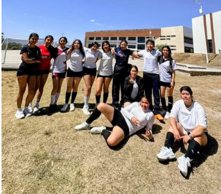
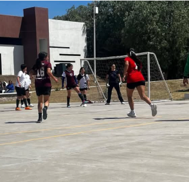
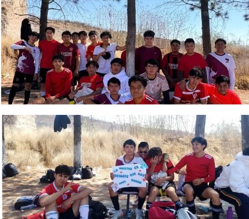
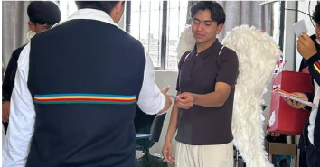
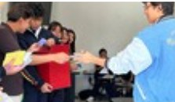

ORGULLO FEMENIL EN CANCHA
Cuadrangular de fútbol femenil fortalece la vinculación académica
Como parte de las acciones de vinculación entre el Bachillerato Manuel Tapia y la Universidad Politécnica de la Energía, se participó el viernes 27 de febrero, en un cuadrangular de fútbol femenil que representa una valiosa oportunidad para fortalecer la colaboración entre ambas instituciones.
Este encuentro amistoso permitió no solo el intercambio deportivo, sino también la consolidación de lazos académicos y formativos, promoviendo en los estudiantes estilos de vida saludables, el trabajo en equipo y el espíritu competitivo.


Talento y compromiso que inspira
El club deportivo de fútbol femenil del Bachillerato estuvo integrado por Estrella, Briyeda, Ingrid, Melanie, Yesenia, Sherlyn, Zoé, Aline, Mariana, Sarai, Ana, Vanessa, Kimberly, Yura, Samantha y Evelyn, quienes representaron con orgullo y responsabilidad a la comunidad educativa.
Su participación reflejó disciplina, compañerismo y compromiso, valores que forman parte esencial de la formación integral que impulsa la institución.
Acompañamiento docente
Se reconoce el respaldo y acompañamiento del docente Francisco Javier Castelar Zamora, cuyo apoyo fue fundamental para el adecuado desarrollo y participación de las estudiantes en este encuentro deportivo.
Formación integral más allá del aula
Actividades como esta fortalecen la vinculación académica y contribuyen al desarrollo integral de las estudiantes, reafirmando que el deporte también es un espacio de aprendizaje, convivencia y crecimiento personal.
DÍA DE SAN VALENTIN
Encuentro Deportivo Varonil
Como parte de estas actividades, se realizó un encuentro deportivo de fútbol varonil entre el Bachillerato Plantel Tepeji y el CBT San Luis Taxhimay.
Este partido representó una oportunidad para fomentar el trabajo en equipo, la sana competencia y el espíritu deportivo, reafirmando que el deporte es también una herramienta formativa.


INICIATIVAS ESTUDIANTILES
El grupo 6° A, integrado por Ariel, Estrella, Daniela, Ingrid y Ximena, organizó el “Buzón de Amor”, una iniciativa de amistad, unión y compañerismo entre las y los estudiantes del plantel.
Esta actividad fortaleció los lazos entre la comunidad escolar y permitió expresar de manera positiva, el valor de la amistad.
PROMOVIENDO VALORES
En el marco de las actividades orientadas a promover la Convivencia Sana y Pacífica, el Bachillerato Plantel Tepeji llevó a cabo diversas acciones enfocadas en reforzar los valores del respeto, la inclusión y el compañerismo entre la comunidad estudiantil.
La entusiasta participación de las y los estudiantes reflejó el compromiso colectivo por construir un entorno basado en la armonía y el respeto mutuo.

Colaborador del mes
Ariel Olguín Granados
Por su dedicación, esfuerzo y compromiso con la solidaridad.
ACTIVIDAD
"Buzón del amor"
VALOR DESTACADO
Empatía
CONTINUIDAD INSTITUCIONAL
La realización de actividades sociales, no frena procesos educativos.